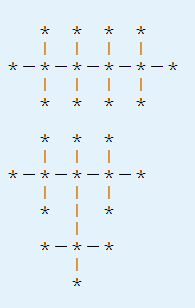

小强不像他的朋友阿米巴那样热爱化学；相反，小强最喜欢的事情是数数，特别有的时候喜欢数树。
小强发现来自自然界的一类无根树很特别：它们的所有非叶子节点的度数都是一样的。小强管这种无根树叫做正则无根树。例如，14个点的度数限制为4的正则无根树有以下２种：

小强想数N个点的度数限制为M的正则无根树有多少种。在热爱化学的阿米巴的怂恿下，小强把M的范围限制在了4以下，至于这么做在化学、量子物理学和哲学上的理由，小强至今没有搞懂。
现在，你要写程序来满足小强数树的愿望。
现在，你要写程序来满足小强数树的愿望。